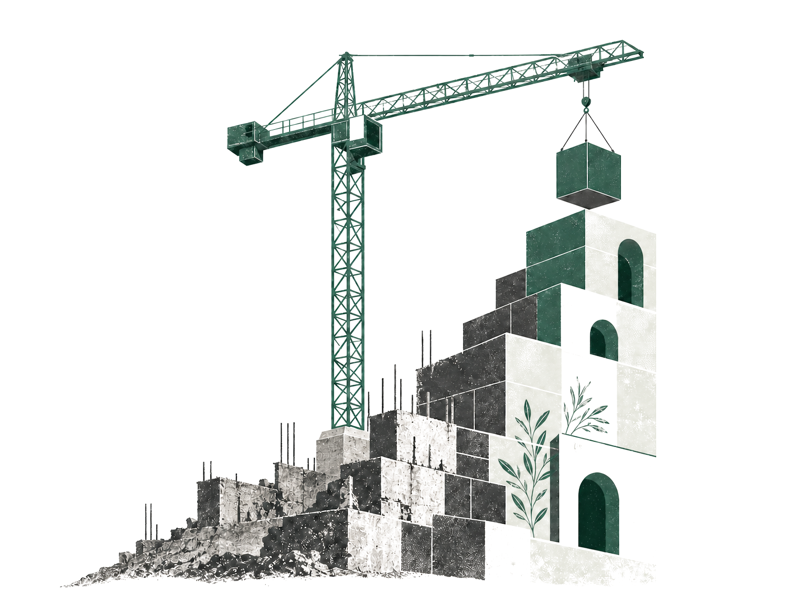

Hi, I’m Anshal.
I make complexbusiness problemseasier to act on.
I use analytics and systems thinking to help teams understand problems, make better decisions, and create measurable progress.
Explore my work
Hi, I’m Anshal.
I use analytics and systems thinking to help teams understand problems, make better decisions, and create measurable progress.
Explore my work